Dzień 2 - Parametry strony
Parametry strony
Wersja pdf Uwaga: obrazki są błędne.
Marginesy
Ogólna koncepcja:
par()## $xlog
## [1] FALSE
##
## $ylog
## [1] FALSE
##
## $adj
## [1] 0.5
##
## $ann
## [1] TRUE
##
## $ask
## [1] FALSE
##
## $bg
## [1] "white"
##
## $bty
## [1] "o"
##
## $cex
## [1] 1
##
## $cex.axis
## [1] 1
##
## $cex.lab
## [1] 1
##
## $cex.main
## [1] 1.2
##
## $cex.sub
## [1] 1
##
## $cin
## [1] 0.15 0.20
##
## $col
## [1] "black"
##
## $col.axis
## [1] "black"
##
## $col.lab
## [1] "black"
##
## $col.main
## [1] "black"
##
## $col.sub
## [1] "black"
##
## $cra
## [1] 28.8 38.4
##
## $crt
## [1] 0
##
## $csi
## [1] 0.2
##
## $cxy
## [1] 0.02604167 0.06329115
##
## $din
## [1] 6.999999 4.999999
##
## $err
## [1] 0
##
## $family
## [1] ""
##
## $fg
## [1] "black"
##
## $fig
## [1] 0 1 0 1
##
## $fin
## [1] 6.999999 4.999999
##
## $font
## [1] 1
##
## $font.axis
## [1] 1
##
## $font.lab
## [1] 1
##
## $font.main
## [1] 2
##
## $font.sub
## [1] 1
##
## $lab
## [1] 5 5 7
##
## $las
## [1] 0
##
## $lend
## [1] "round"
##
## $lheight
## [1] 1
##
## $ljoin
## [1] "round"
##
## $lmitre
## [1] 10
##
## $lty
## [1] "solid"
##
## $lwd
## [1] 1
##
## $mai
## [1] 1.02 0.82 0.82 0.42
##
## $mar
## [1] 5.1 4.1 4.1 2.1
##
## $mex
## [1] 1
##
## $mfcol
## [1] 1 1
##
## $mfg
## [1] 1 1 1 1
##
## $mfrow
## [1] 1 1
##
## $mgp
## [1] 3 1 0
##
## $mkh
## [1] 0.001
##
## $new
## [1] FALSE
##
## $oma
## [1] 0 0 0 0
##
## $omd
## [1] 0 1 0 1
##
## $omi
## [1] 0 0 0 0
##
## $page
## [1] TRUE
##
## $pch
## [1] 1
##
## $pin
## [1] 5.759999 3.159999
##
## $plt
## [1] 0.1171429 0.9400000 0.2040000 0.8360000
##
## $ps
## [1] 12
##
## $pty
## [1] "m"
##
## $smo
## [1] 1
##
## $srt
## [1] 0
##
## $tck
## [1] NA
##
## $tcl
## [1] -0.5
##
## $usr
## [1] 0 1 0 1
##
## $xaxp
## [1] 0 1 5
##
## $xaxs
## [1] "r"
##
## $xaxt
## [1] "s"
##
## $xpd
## [1] FALSE
##
## $yaxp
## [1] 0 1 5
##
## $yaxs
## [1] "r"
##
## $yaxt
## [1] "s"
##
## $ylbias
## [1] 0.2Opisy parametrów są opisane w dokumentacji - link.
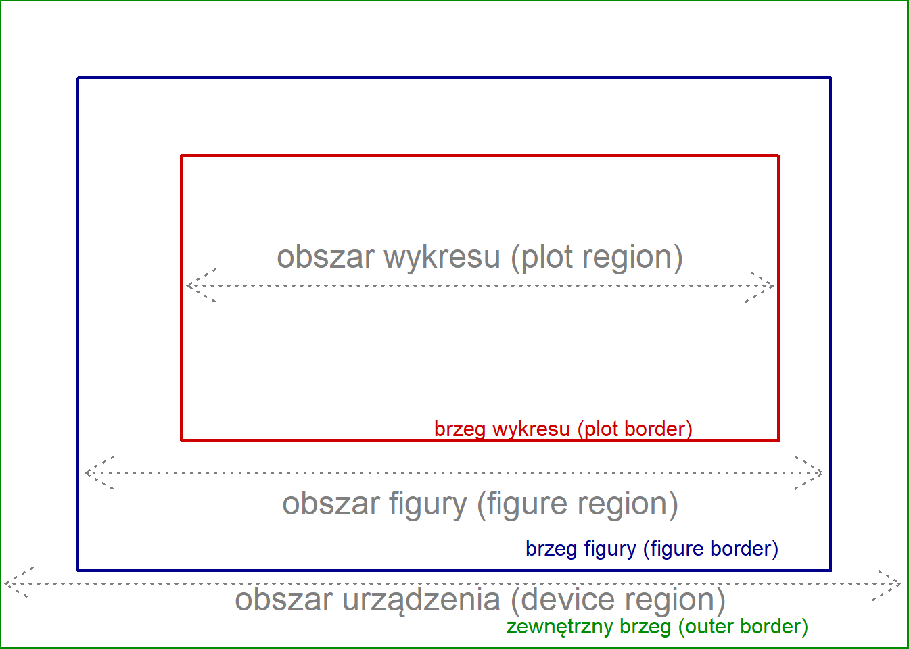
mar- margines wyrażony w liczbie linii (interlinia?)mai- margines wyrażony w calachoma- zewnętrzny margines wyrażony w liczbie liniiomi- zewnętrzny margines w calach
Kolejność parametrów: dół, lewo, góra, prawo.
Przykład dla kodu:
par(mar=c(5, 4, 3, 2))
par(oma=c(3, 3, 3, 3))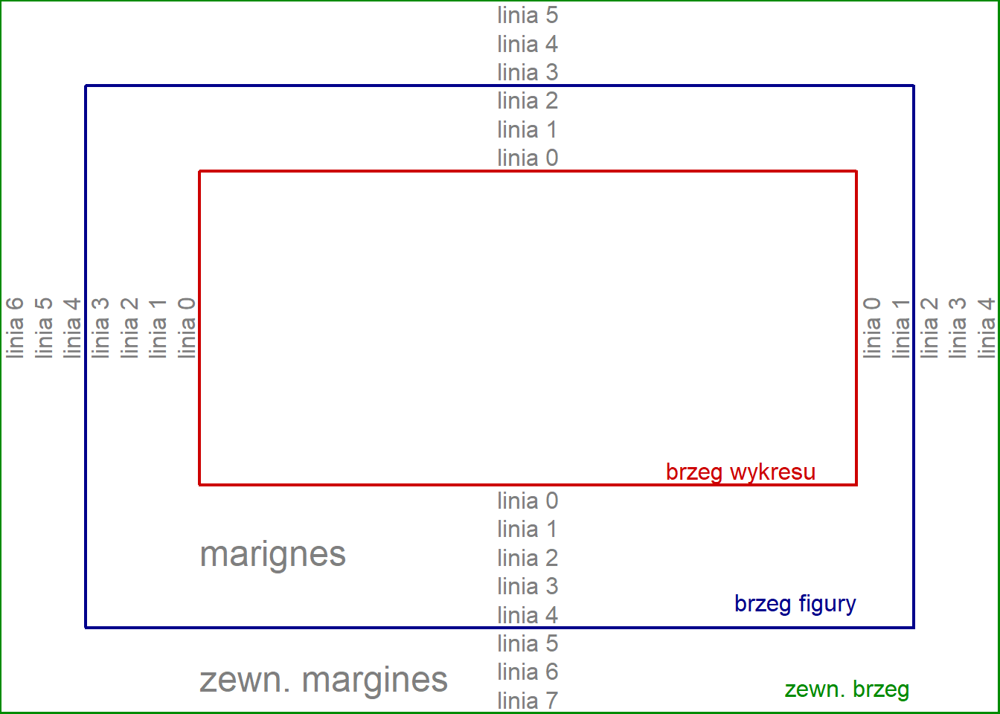
Zewnętrzny margines jest domyślnie ustawiony na zero. Przykłas użycia komendy mar.
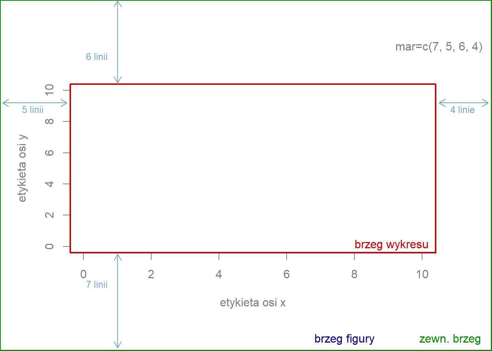
Przykład użycia oma. Domyślne ustawienia mar to c(5.1, 4.1, 4.1, 2.1).
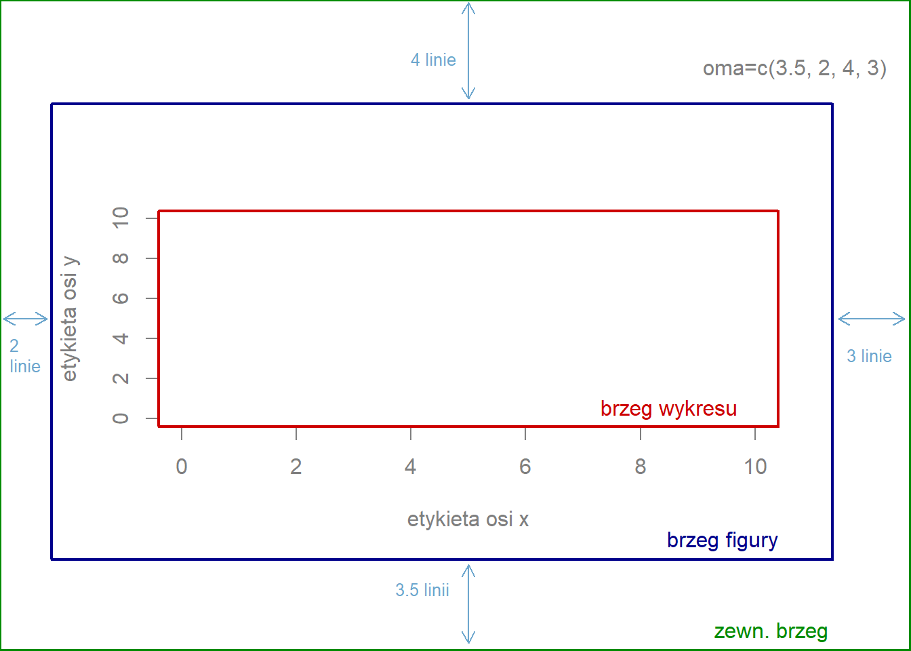
Przykład jednoczesego ustawienia oma i mar.
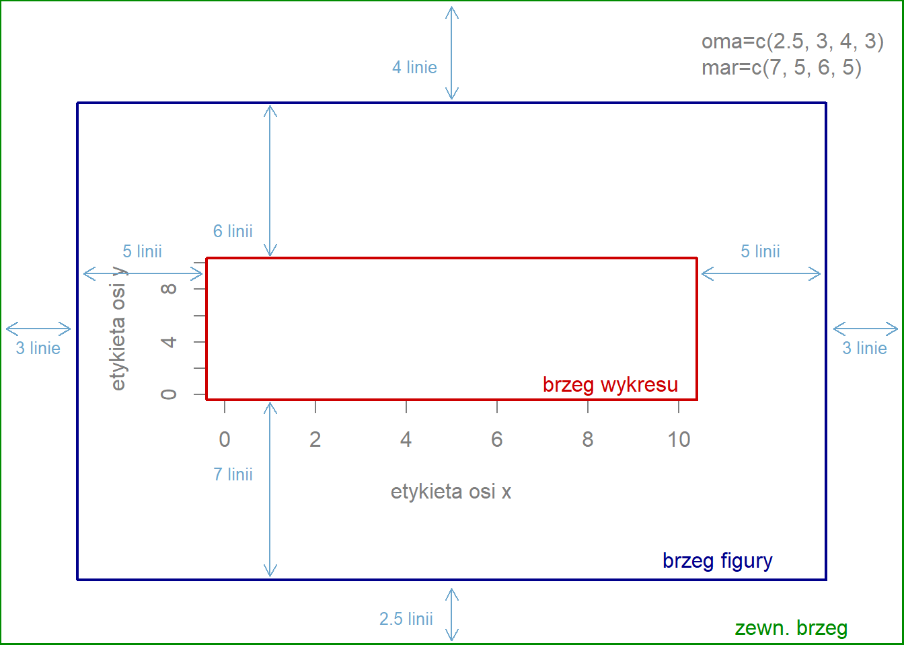
Przykład mfrow.
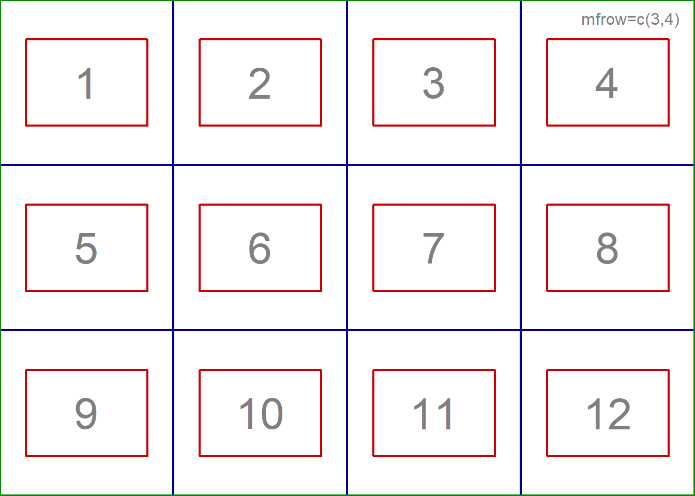
Przykład mfcol.
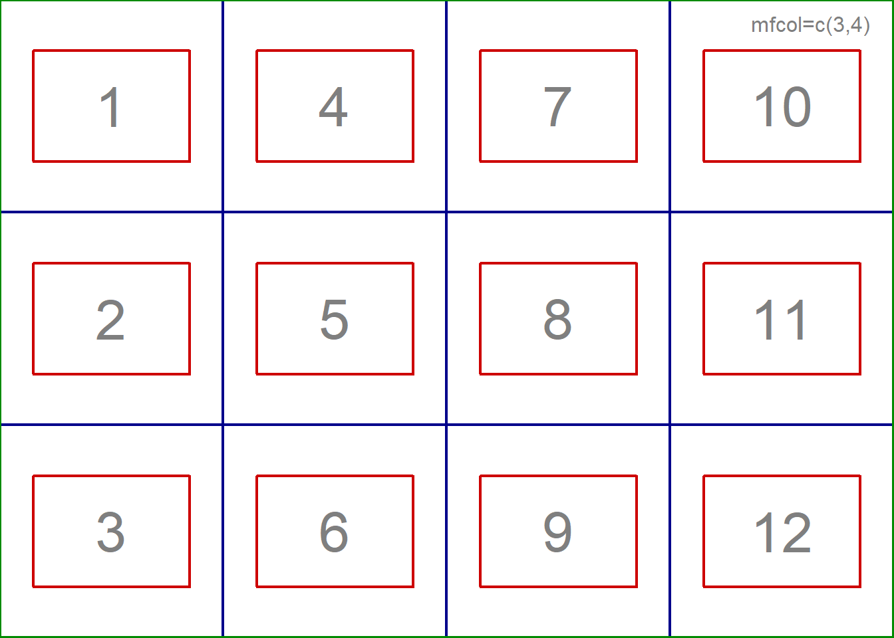
Przykłady
x = seq(0,10,by=0.2);
y = sin(x);
par(oma=c(3,3,3,3))
par(mar=c(5,4,4,2) + 0.1)
plot(x, y, type="l", xlab="X", ylab="Y")
mtext("Linia 0", side=3, line=0, adj=1.0, cex=1, col="green")
mtext("Linia 1", side=3, line=1, adj=1.0, cex=1, col="green")
mtext("Linia 0", side=1, line=0, adj=0.0, cex=1, col="blue", outer=TRUE)
mtext("Linia 1", side=1, line=1, adj=0.0, cex=1, col="blue", outer=TRUE)
box("outer", col="brown", lty="dotted") 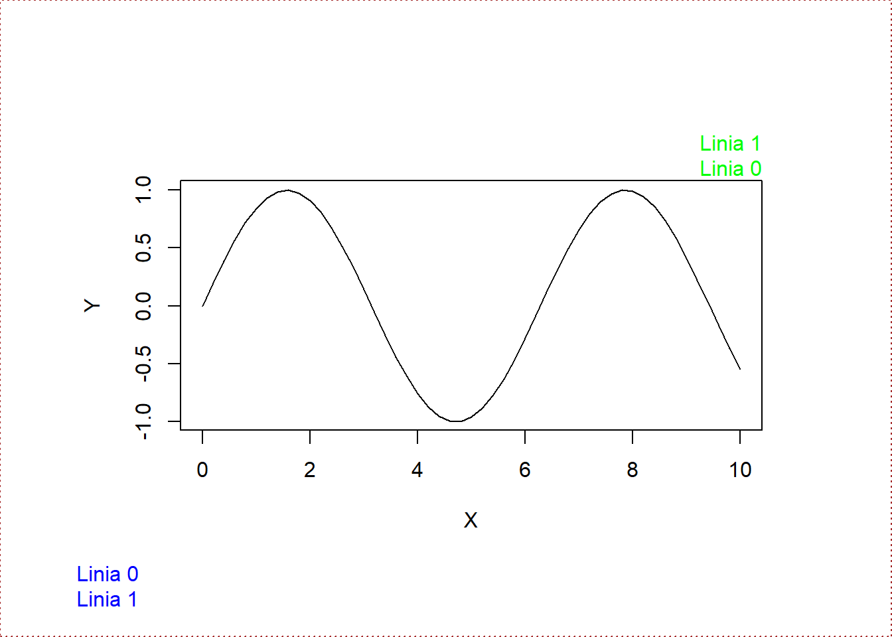
Parametry w funkcji mtext - link:
side- strona (1=dół, 2=lewo, 3=góra, 4=prawo)line- numer linii (zaczynając od zera przy brzegu)adj- wyrównanie (0-dół, lewo; 1 - góra, prawo)cex- powiększenie tekst (znaków, “char”-ów)outer- wartość logiczna odpowiadając za występowanie na marginesie zewnętrznym (jeśli dostępny)
Parametry w funkcji box - link:
plot,figure,inneriouter- miejsce ramki- inne jak wcześniej.
par(mfrow=c(3,1))
hist(mtcars$wt)
hist(mtcars$mpg)
hist(mtcars$disp)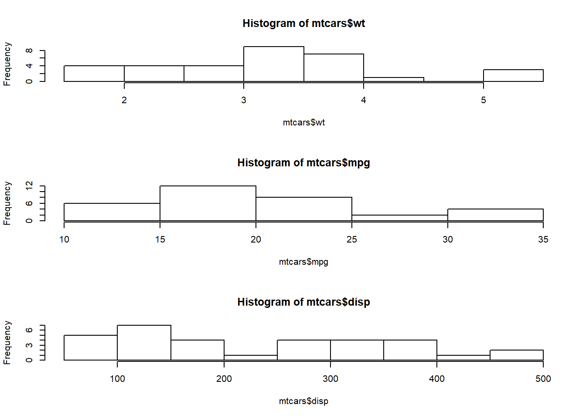
Nakładanie obrazów na siebie:
par(fig=c(0,0.8,0,0.8))
plot(mtcars$wt, mtcars$mpg, xlab="Car Weight",
ylab="Miles Per Gallon")
par(fig=c(0,0.8,0.55,1), new=TRUE)
boxplot(mtcars$wt, horizontal=TRUE, axes=FALSE)
par(fig=c(0.65,1,0,0.8),new=TRUE)
boxplot(mtcars$mpg, axes=FALSE)
mtext("Enhanced Scatterplot", side=3, outer=TRUE, line=-3)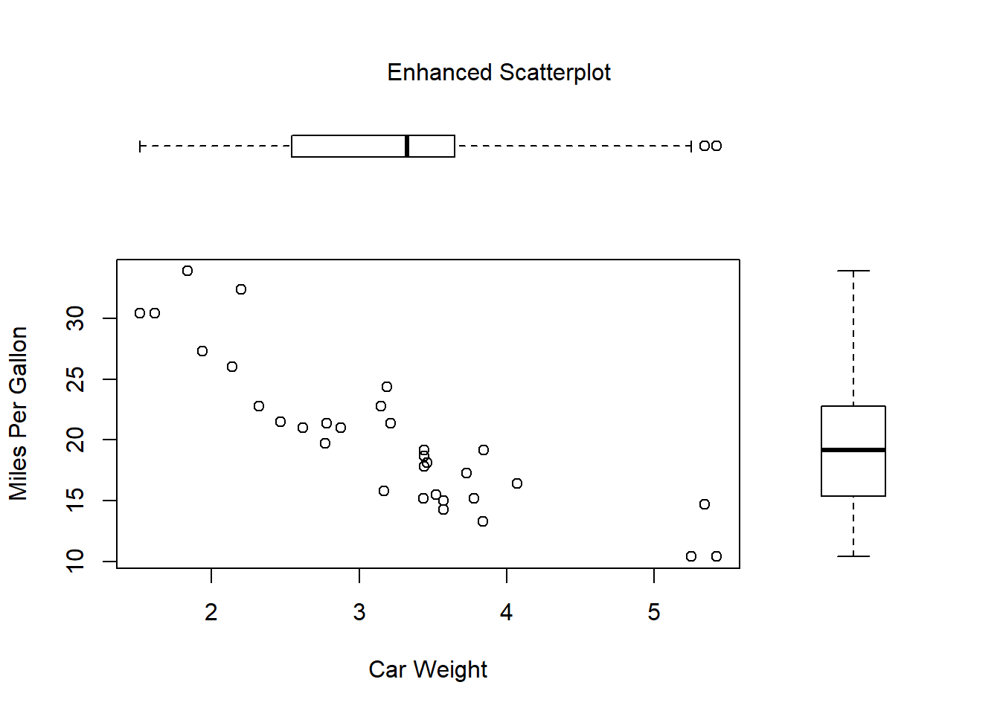
Wykres słupkowy na mapie:
library(sp)
gadm <- readRDS("gadm36_POL_1_sp.rds")
plot(gadm)
par(plt=c(0.57,0.62,0.7,0.8),new=TRUE)
wybory<-c(33,22,11)
barplot(wybory, col=rainbow(3), axes=FALSE)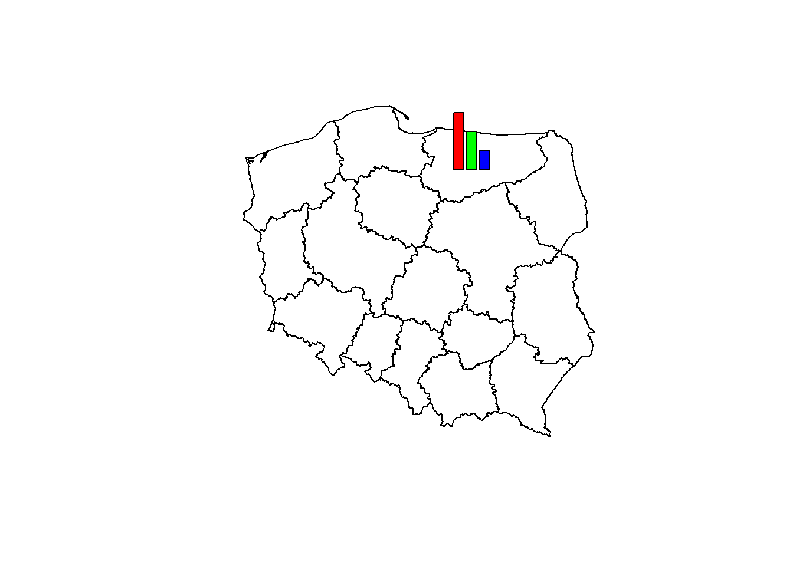
Resetowanie ustawień
dev.offZapisywanie wykresów
Pierwszą opcją jest zapisanie za pomocą graficznego interfejsu środowiska RStudio.

Eksport
Objaśnienienie rozszerzeń plików:
- png - rastrowy format plików graficznych oraz system bezstratnej kompresji danych graficznych
- jpg - rastrowy format plików graficznych oraz system stratnej kompresji danych graficznych
- tiff - przechowuje informacje o kanałach alfa, ścieżkach, profilu kolorów, komentarzach, umożliwia także zapisywanie dokumentów wielostronicowych
- bmp - wolny od patentów jest dostępny (zwykle bez kompresji)
- metafile (emf) - format pliku grafiki wektorowej 2D, grafiki rastrowej i tekstu (głównie dla Windowsa).
- svg - uniwersalny format dwuwymiarowej grafiki wektorowej (statycznej i animowanej), nieobwarowany licencjami i patentami
- eps - format plików, będący podzbiorem języka PostScript, służący do przechowywania pojedynczych stron grafiki wektorowej w postaci umożliwiającej osadzanie ich w innych dokumentach
Zapisywanie za pomocą kodu
png('filename.png')
# make plot
dev.off()